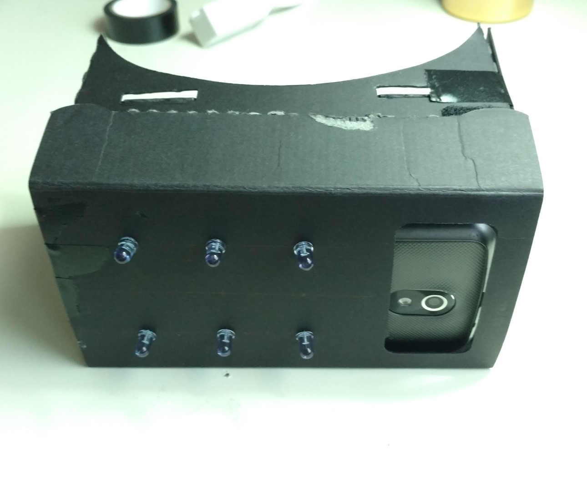

Night Vision Goggles
|
Overview
Since phone cameras pick up the IR spectrum, I though maybe I could create a night vision camera using one of my old phones and some IR LEDs. I also have a google cardboard like device that allows you to turn your phone into a virtual reality headset, which I thought would be perfect to make a set of night vision goggles. It actually worked out pretty well! After removing the IR filter from the phones camera, the "goggles" let you see pretty far in complete darkness.
Details I was hoping that the IR filter in the phone camera wouldn't interfere too much, but unfortunately that didn't turn out to be the case. I had to remove the IR filter from one of my old phones instead. I found a great tutorial on how to do that here: Modify Google Galaxy Nexus for NIR. It wasn't too difficult, but was a lot more involved than I was expecting. Here are some pics of the process
Once the IR filter was out of the phone camera, I started attaching some IR LEDs to the outside of the google cardboard. I bought some 'super bright' IR LEDs from amazon that can handle up to 100mA of continuous current each @1.6V forward voltage drop. I was going to put 9 of them on the front, but that seemed like total overkill after seeing how bright these things are, so I only ended up putting 6 on the front. I'm using a lithium ion battery pack from sparkfun to power the LEDs, and have a power switch attached to the cardboard that will turn them on and off.
See the video above and some of the images below for the finished product! |
 | ||||
|
More Pictures
|
|||||